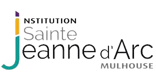
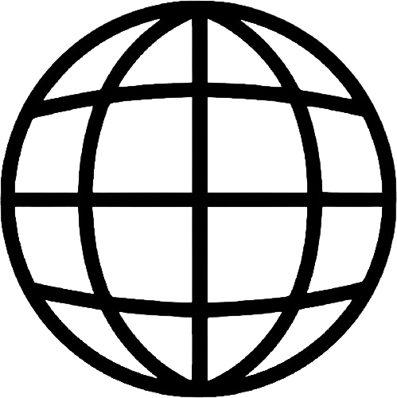

Qui suis-je ?
Je m’appelle Kleiton KITANI et je suis né le 21 avril 2005 à Mulhouse. Au CP, j’ai intégré un cursus abibac. J’ai été au collège Episcopal de Zillisheim, tout en continuant le cursus abibac.

Enfin, une fois mon brevet des collèges obtenu, j’ai intégré le lycée Jeanne d’Arc à Mulhouse. Puis en première, mes spécialités étaient les mathématiques, la physique-chimie et la N.S.I. (Numérique et Science de l’Informatique). Enfin, en terminale, j’ai gardé la spécialité mathématique et N.S.I., et j’ai obtenu la mention bien au baccalauréat, et j’ai obtenu mon abibac (abitur).
J’ai toujours été passionné par l’informatique et, ayant découvert l’univers du réseau à travers mes cours de N.S.I., c’était pour moi l’un des meilleurs choix à faire pour continuer d’apprendre ce qui me plait. Plus tard, je souhaiterai continuer mes études dans une école d’ingénieur ou dans un master.
